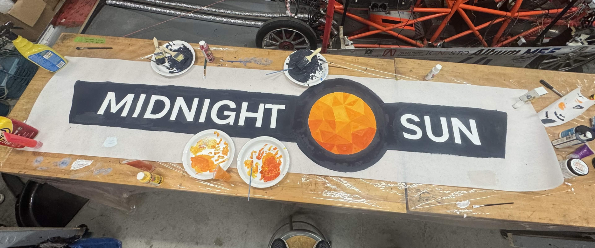
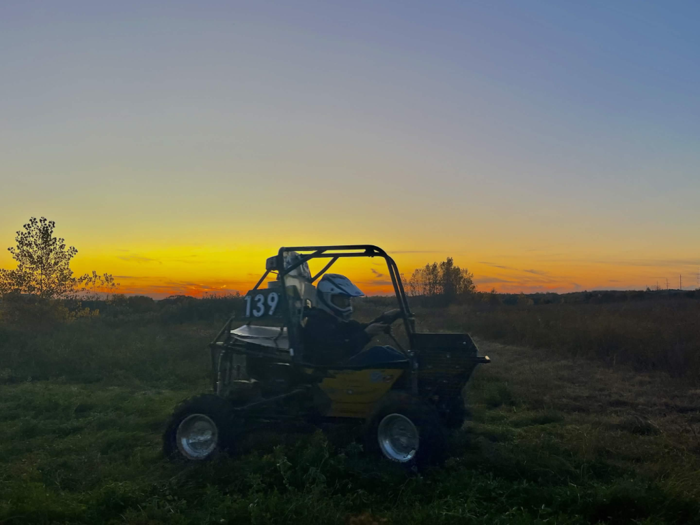

About Me
Mechanical Engineering · University of Waterloo


About Noah
Hi, I'm Noah! I'm a mechanical engineering undergrad at the University of Waterloo, and I'm interested in utilizing research and mechanical design to optimize systems and build projects that can positively impact people's lives.
This fall, I am working with the University of Waterloo Midnight Sun team in improving the MS 16.5 solar car exterior body, and I am also working with the UWaterloo Automotive Futures Team in researching on the 2026 Jeep Cherokee and in preparing to manufacture new technologies for off-road driving.
My recent projects include designing a solar car canopy for Midnight Sun and a rotary switch and mount for UWAFT. Check them out below!
Teams
- University of Waterloo Midnight Sun
- UWaterloo Automotive Futures Team
- Mechanical Engineering · UW 2029